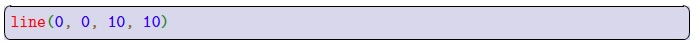
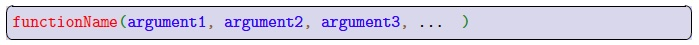
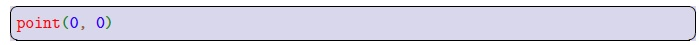
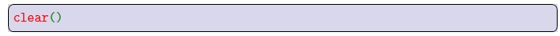

In Python, we invoke the algorithm inside of a function by calling the function. To call a function, we write the name of the function, followed immediately by a pair of parentheses. The arguments to the function, also known as inputs, are a comma-separated list within the parentheses. We illustrate this with the line function we saw in Chapter 2:

We have coloured the different parts of the function call:
| Red | The function name. |
| Green | Parentheses enclosing the list of arguments. |
| Blue | The arguments (inputs) to the function. |
| Brown | The commas separating the arguments in the argument list. |
All function calls have the same general format and look like this:

Functions can, of course, have different numbers of arguments. We’ve already seen an example of this as well; the point function only had two arguments, and looked like this:

In fact, a function might require no arguments at all. The clear function in Processing, which simply sets the entire drawing canvas to black, is an example of this:

Proper Python syntax for making a function call still includes the parentheses, even though there is nothing in them! From now on, when we refer to a function like line() in this text, we’ll include a pair of matching round brackets just to make it clear that we’re talking about a function; this is just a short-hand for clarity that line() is, in fact, a function.